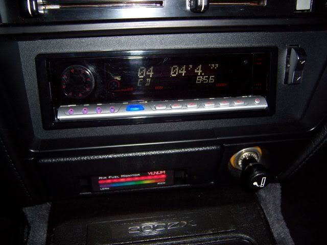

-
Any pics?akronz wrote: i cut out a piece of aluminum 16th inch thick formed it perfect into the astray area drilled into those two little angle pieces of plastic and mounted my switches plus momentary switches coming
1985 GLL 300ZX Turbo -
[quote]jbmartin87 wrote:ill take some sunday when im not working and ill post em up for ya. its a "rough draft" as of right now till i can get it to perfection ill mount it in temp (got no carpet in car atm)Originally posted by akronz
http://www.neospeed.freeforums.org
1985 300zx n/aRegretfully Retired
1997 240sx srdetSadfully Sold
(!Attention!) If you have an 85 - 89 thats not stripped out a shell rolling body preferred contact me at330 328 2789 (ask for rick) -
Did this with my afr gauge many years (8?) back. Yes, I know it is a narrowband :-?

-
I use it to hold my sirius radio :lol:
Do the same in my Jeep TJ haha. -
I did mine awhile back, kinda like Z-bums,
except the tray is on top of the boost controller and the spring is
directly underneath. The electrical tape i used to black out the sheetmetal is coming off though.
I didn't have the heart to cut up my good ashtray so i got this one
from a wrecking yard and hacked out the back with a Dremel.
84 AE/Shiro #683/Shiro #820/84 Turbo -
^nice. Yeah i bought another ash tray as well. Always have to keep the stock one just in case :nanan?re
Mine looks a lot cleaner now that I mended the plastic and painted it. I like it being accessible without pulling the tray out.Usual Z31 suspect: Garage Queen (aka broken)

-
I have had my greddy profec b spec1 or whatever (the older one) in there for some time. The plastic is a PITA to cut. A cutting wheel works the best. It's easy to crack that hard plastic otherwise.85 Z31 6.0 LSX turbo 766whp/792wtq
04 GTO, LS6, big cam, porting, N20… underway for summertime daily driver. -
I had my Spec2 installed like yours, except only in the hand grab area. And yes, it took me 2 ashtrays. Did not like it at all. Damn near impossible to read since the visibility of the Profec sucks to begin with. I can barely read it where it is now, in the clock location. Someone needs to make a nice analog gauge BC. In fact, I want EVERYTHING aftermarket to have a real gauge instead of this digital crap I can't read when it's important.sigpic -
Thank you! I have the new AEM analog wide band gauge and I LOVE it. It is so much easier for me to see a needle in a rough area and say "Ok, I'm pretty good where I am at" Rather than having to look over and search for a digital number, then look for the next number after the decimal to make sense of it all and decide if I am lean or not.Butter wrote: In fact, I want EVERYTHING aftermarket to have a real gauge instead of this digital crap I can't read when it's important.
My friend Thomas hates the analog ones though. I don't get it. They are so much easier to read when you have .25 seconds to see what it says.85 Z31 6.0 LSX turbo 766whp/792wtq
04 GTO, LS6, big cam, porting, N20… underway for summertime daily driver. -
I personally like the wideband as a digital gauge. But like you said, your mind can get use to knowing what to look for and that can be bad for digital when you think your at 11.2 but you are at like 13.2 under boost.
All other gauges I completely agree 100 % should be analog. Digital is useless. Analog/digital Sweeper gauges just make sense no matter how old they are.Usual Z31 suspect: Garage Queen (aka broken)
-
its personal preference, but even so- digital is far more accurate between two gauges of comparable quality in the same form factor throughout the same range.
trying to prove otherwise is naive. -
They're both accurate enough for anything you will be using a gauge display and not logging for.
trying to prove otherwise is naive.1985 NA2T(now RB) * 1988 SS x2 * 1984 AE x3 * 2006 350Z

-
What a mess.
sigpic

Copyright © 2006–. All rights reserved. Privacy Policy